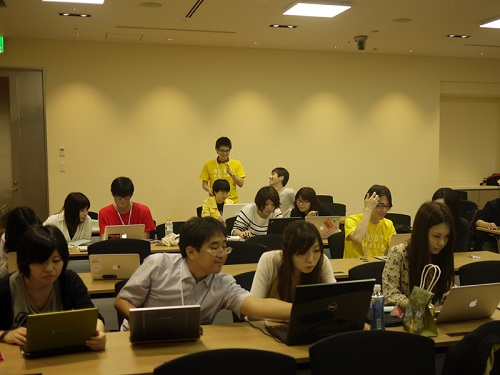
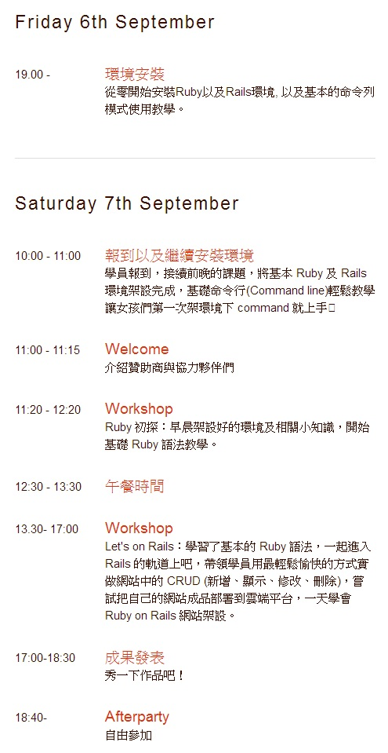

Rails Girls - 專為女性設計的開放程式語言工作坊

女生去學寫程式，好嗎？
長久以來社會大眾對於女性的印象，多半是說話要溫柔、舉止要端莊，而那些說話沒那麼溫柔、舉止沒那麼端莊的女性們，就常常會聽到：「你是女生耶，坐要有坐相、動作不可以這麼粗魯，要留長髮才好看！」大部分的長輩們總是這樣對小孩子說。講這些話也沒甚麼是非對錯，而是這些想法從我們小時候就根深蒂固、早已經被古典制約了。隨著時代變遷，女性的思維意識也逐漸變遷，台灣早已經不再是「男主外、女主內」的年代了。很多長久以來被認為男性才能做的工作，從警察、消防員到市場的肉販，處處都可以見到熱衷著這些工作的女性。越來越少人會去執著「女生唸文科比較好」這件事情了。只要她有一份熱誠在心中，又何必去質疑她選擇她所喜歡的興趣或是職業呢？
2010 年 11 月，當時仍就讀大學、年僅 24 歲的 Linda Liukas，為了要讓更多女性利用科技去幫助自己完成想要做到的事情，在芬蘭和 Karri Saarinen 一起舉辦了第一場 Rails Girls、超過 100 位女性參與的 Ruby on Rails 工作坊，鼓舞了許多從未接觸、或是不敢接觸開放原始碼程式語言的女性參與，並在活動中了解自己能夠透過 coding、透過 Ruby on Rails 做些什麼。
▲Rails Girls: Ruby on Rails Workshop for Girls，引用自 railsgirls.com。

▲日本今年 8 月所舉辦的 RailsGirls，photo by @eddiekaoRails Girls 的理念很快地在世界各地散播，在世界各地都有不少的 Rails 愛好者前仆後繼地舉辦 Rails Girls 活動，今年更有多達 60 個不同國家的城市加入 Rails Girls 的行列。包括台灣，也在今年由一群愛好 Ruby on Rails 的社群朋友將之引進了，為台灣想接觸程式語言與科技的女性朋友們設計的 Rails Girls Taiwan，將在 9 月 6 日、9 月 7 日舉行！不需要任何基礎就可參加，但很可惜名額只有 30 名，所以想要參加要把握機會喔！一起來探索 Ruby on Rails 所帶來的無限可能吧！

詳細活動內容：
- 時間：2013/9/6、2013/9/7
- 地點：CLBC（復興南路一段 293 號 3 樓）
- 女性學員報名 (2013/8/13 12:00 ~ 2013/9/3 12:00)
- 教練報名
- 學員必需自備筆記型電腦, 作業系統不限（推薦 Linux / BSD 或 MacOS 平台）